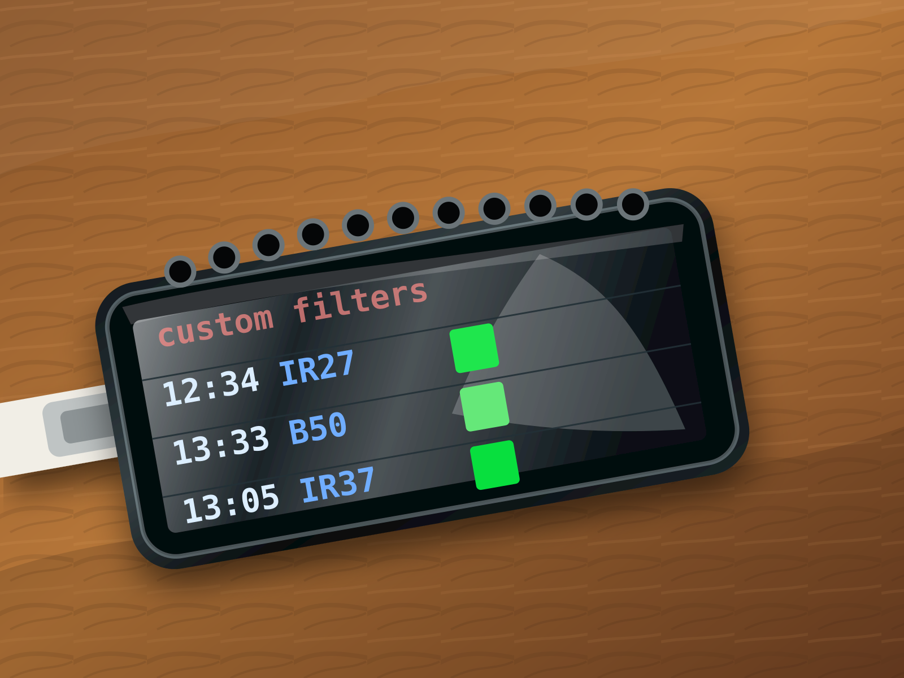
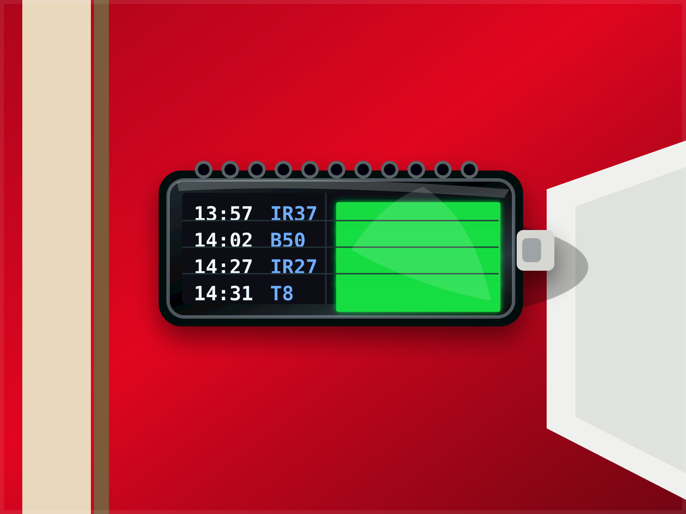

Real-time departures
Select a Swiss stop and request trains, trams, buses, ships, cableways, or any combination supported by the API.
ESP32 • Swiss public transport API • ST7789
A configurable departure board for Swiss public transport. Pick a station or stop, choose API modes like train, tram, bus, ship, or cableway, then prioritize the lines and destinations you actually care about.
Drag to rotate • Scroll to zoom
What it does
Select a Swiss stop and request trains, trams, buses, ships, cableways, or any combination supported by the API.
Green blocks mark departures that are on time. Red blocks show delays above one minute, capped at two digits.
Prioritize destination text and exact line labels, or hide non-matching departures for a focused board.
Uses the HTTP date header to dim the ST7789 backlight late at night and restore normal brightness during the day.
Data pipeline
The sketch asks the transport API for up to eight departures using your selected transport modes. ArduinoJson keeps only the fields the UI and custom filters need, reducing parse pressure on the ESP32.
transportations[]=bus
const char* TRANSPORTATION_TYPES[] = {"train", "bus"};
const char* DESTINATION_FILTERS[] = {"basel", "laufen"};
const char* LINE_FILTERS[] = {"S3", "B50"};
const bool ONLY_SHOW_FILTER_MATCHES = false;
filter["stationboard"][0]["to"] = true;
filter["stationboard"][0]["category"] = true;
filter["stationboard"][0]["number"] = true;
filter["stationboard"][0]["stop"]["departure"] = true;
filter["stationboard"][0]["stop"]["delay"] = true;RAM discipline
StaticJsonDocument<9216> holds the filtered stationboard data after parsing.
StaticJsonDocument<512> stores the ArduinoJson filter schema.
The response string reserves room up front to reduce repeated heap growth.
Temporary arrays inspect up to eight API rows, then render the best four matching rows.
Reliability
The board resets the task watchdog around long network and parse steps. If Wi‑Fi, HTTP, or JSON handling fails, the display shows the reason briefly before the ESP32 restarts into a clean state.
esp_task_wdt_reset() before and after blocking work.
wifi, http, json_nomemory, or body validation errors.
RESET: with the failure message.
ESP.restart() recovers from a stuck or corrupted runtime state.
Build shots


Build details
| ST7789 pin | ESP32 pin |
|---|---|
| MOSI | GPIO 6 |
| SCLK | GPIO 7 |
| CS | GPIO 14 |
| DC | GPIO 15 |
| RST | GPIO 21 |
| BL | GPIO 22 |
STATION, ssid, and password.TRANSPORTATION_TYPES for train, tram, ship, bus, or cableway.